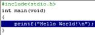
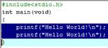
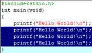
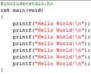

Problem A
Hello World!
Input: Standard Input
Output: Standard Output
When you first made the computer to print the sentence “Hello World!”, you felt so happy, not knowing how complex and interesting the world of programming and algorithm will turn out to be. Then you did not know anything about loops, so to print 7 lines of “Hello World!”, you just had to copy and paste some lines. If you were intelligent enough, you could make a code that prints “Hello World!” 7 times, using just 3 paste commands. Note that we are not interested about the number of copy commands required. A simple program that prints “Hello World!” is shown in Figure 1. By copying the single print statement and pasting it we get a program that prints two “Hello World!” lines. Then copying these two print statements and pasting them, we get a program that prints four “Hello World!” lines. Then copying three of these four statements and pasting them we can get a program that prints seven “Hello World!” lines (Figure 4). So three pastes commands are needed in total and Of course you are not allowed to delete any line after pasting. Given the number of “Hello World!” lines you need to print, you will have to find out the minimum number of pastes required to make that program from the origin program shown in Figure 1.
|
 |
 |
 |
 |
|
Figure 1 |
Figure 2 |
Figure3 |
Figure 4 |
The input file can contain up to 2000 lines of inputs. Each line contains an integer N (0<N<10001) that denotes the number of “Hello World!” lines are required to be printed.
Input is terminated by a line containing a negative integer.
For each line of input except the last one, produce one line of output of the form “Case X: Y” where X is the serial of output and Y denotes the minimum number of paste commands required to make a program that prints N lines of “Hello World!”.
|
2 10 -1 |
Case 1: 1 Case 2: 4
|